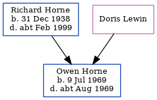

Owen Richard Horne 1969 - c1969
[ Home ] | [ Calendar ] | [ Surnames Index ] | [ Errors ] | [ Family History ]The child of Richard Horne and Doris Lewin, Owen Horne, the fourth cousin on the father's side of Nigel Horne, was born in Thanet, Kent, England on 9 Jul 19691.
He died in Thanet c. Aug 19691.
Parents
- Richard John was born on 31 Dec 1938
Citations
- England & Wales deaths 1837-2007 - Findmypast
Media
England & Wales deaths 1837-2007 - BMD/D/1969/3/AZ/000504/124
England & Wales births 1837-2006 - BMD/B/1969/3/AZ/000792/076
Family Tree
Map
Generated by ged2site. Last updated on Jul 3, 2024